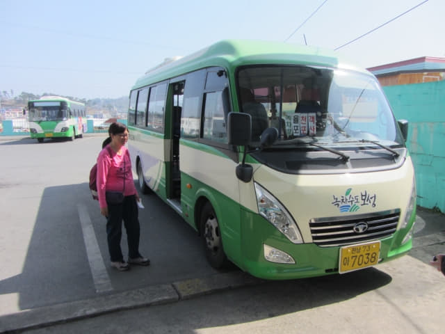

「寶城大韓茶園．第二茶園」和寶城大韓茶園相距不遠, 可以安排在同一天內遊覽, 但有意前往的朋友一定要留意, 其實我們不清楚「寶城大韓茶園．第二茶園」是否開放給旅客參觀的, 入口處有一個應該是禁止進入的高高閘門, 我們看不懂閘門上的韓文, 不知是什麼意思, 看見沒有人, 便戰戰兢兢的從閘門旁走進茶園。
相信大部份旅客和我們一樣, 都是從順天出發往寶城, 我就以順天為出發點, 介紹如何使用公共交通在同一天內遊覽寶城大韓茶園和「寶城大韓茶園．第二茶園」這兩個景點。基本路線如下:
順天 → (火車或巴士) → 寶城 → (小型巴士) → 寶城大韓茶園 → (巴士) →
寶城大韓茶園．第二茶園 → (巴士) → 寶城 → 順天
從順天往寶城, 有兩個選擇。
選擇一: 巴士
順天綜合巴士客運站乘長途巴士往寶城長途汽車客運站(보성 버스터미널), 車資是6,300韓元, 約1小時車程 。巴士班次很頻密, 約二十分鐘便有一班。
[注意]: 寶城長途汽車客運站不是終點站, 要留意下車, 不要睡覺。
選擇二: 火車
亦可以選擇乘火車前往, 不過班次不多。
順天站 → 寶城火車站 (KORAIL 慶全線)
7:05 → 7:59 無窮花
9:38 → 10:38 無窮花
10:56 → 11:51 (S-Train)
如果是從順天乘巴士往寶城長途汽車客運站, 下車後往月台旁的客運大樓一樓售票處買車票, 然後返回月台等候。從寶城長途汽車客運站往寶城大韓茶園, 車程約十分鐘。
寶城長途汽車客運站月台。

寶城長途汽車客運站大樓。

往寶城大韓茶園的小型巴士。

寶城大韓茶園下車巴士站。下車後步行五分鐘便到達售票處。

寶城長途汽車客運站往寶城大韓茶園的巴士時刻表。
如果是從順天乘火車往寶城站, 可以在寶城火車站前的巴士站搭乘從寶城長途汽車客運站(보성 버스터미널)開出來的小型巴士, 亦可以步行往寶城長途汽車客運站乘搭, 步行約15分鐘。
以下是寶城火車站和寶城長途汽車客運站地圖。
寶城大韓茶園有巴士往「寶城大韓茶園．第二茶園」, 巴士站就是下車那個巴士站, 不過班次十分少, 每天只有兩班 — 11:55、15:40, 都是從寶城長途汽車客運站開出, 經寶城大韓茶園、「寶城大韓茶園．第二茶園」, 然後返回寶城長途汽車客運站。
「寶城大韓茶園．第二茶園」下車站是「삼장」。下車後沿馬路走十多分鐘便抵達入口。

巴士路線圖及時刻表。
巴士詳細路線。
[寶城長途汽車客運站]….. → 대한다원 → 대림다원 → 양동 → 상율 → 만수 →
장목 → 동촌 → 율포 (栗浦松田海邊) → 율포 → 면사무소 → 명교리 → 부대앞 →
외래 (有幾間餐館) → 군학리 → 군학리 → 외래 (有幾間餐館) → 삼장 (第二茶園) →
승평 →
삼수 →
원삼수 →
녹동 →
녹동 →
대은 →
동고 →
약산 →
중산교 →
서촌 →
중산 →
남산 →
남산 →
중선 →
서제동 →
웅치관광농원 →
채석 →
연암 →
신기 →
강산 →
강산 →
유촌 →
관동 →
상청룡 →
하청룡 →
신촌 →
보성터미널 (寶城長途汽車客運站)
不過, 如果想好像我們那樣, 先吃完午餐才步行往「寶城大韓茶園．第二茶園」遊覽, 可在早一個站 的「외래」巴士站下車。

在「삼장」巴士站馬路對面等候, 再說一次:「一定要在巴士站馬路對面等候!!!!!」再多說一次: 「千萬不要在巴士站亭等候, 一定要在巴士站馬路對面等候!!!!!」 我們就是在巴士站亭等候, 巴士車長的駕駛技術很「勇和狠」的, 當巴士駛來時, 我們揮手示意上車, 怎料他以為我們只是和他打招呼, 沒有停下來, 呼一聲駛去; 因只得這一班巴士, 當時幾乎發狂, 唯有一邊大聲喊、一邊揮手在馬路中狂奔追著巴士, 幸好車長看見, 在差不多六十尺前才停下來, 差點兒流落鄉間, 也幸好當時馬路沒有其他汽車, 否則真是非常危險。

{kind=link}
{kind=link}
{kind=link}